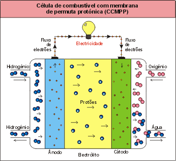
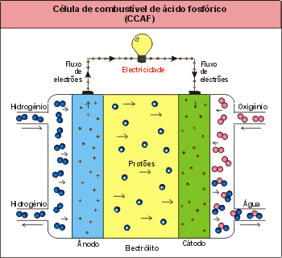
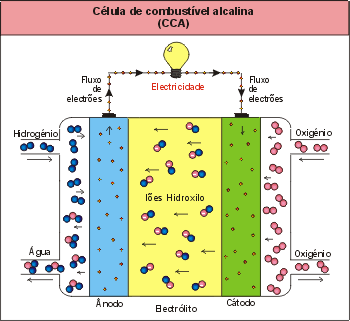
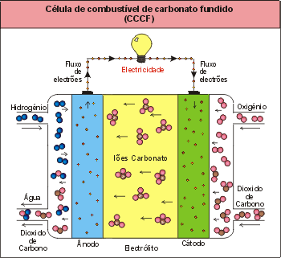

1 / 6

Hidrogenio
2 / 6

Solar
3 / 6

Eólica
4 / 6

Ondas
5 / 6

Geotermica
6 / 6

Biomassa
O que é Hidrogênio?
O Hidrogênio é um elemento químico abundante no Universo, embora o hidrogênio elementar seja raro na Terra. Este é produzido a partir de processos industriais, entre eles o uso de hidrocarbonetos. O Hidrogênio é um gás (em estado normal) inodoro, incolor e inflamável.
Processo de extração:
Um dos processos utilizados é chamado reforma a vapor que em altas temperaturas, com a utilização de catalisadores, consegue-se separar o hidrogênio de combustíveis como etanol e gás natural. Outro modo de separar o hidrogênio é por eletrólise, em que se divide a molécula de água ao meio, separando o hidrogênio e o oxigênio, por meio da passagem de uma corrente elétrica.
Para produzir energia com base no hidrogênio, são utilizadas células a combustível que combinam hidrogênio com oxigênio, em um processo eletroquímico. Estas células requerem alimentação contínua de hidrogênio pelo ânodo e de oxigênio pelo cátodo A conversão a partir da reação de átomos de hidrogênio com átomos de oxigênio, formam eletricidade, calor e água. Sendo assim, o processo de obtenção de energia por este meio não produz subprodutos nocivos à natureza. As células a combustível são consideradas o melhor modo de aproveitamento da conversão de H2 em energia.
Os tipos de células a combustível podem variar, mas elas funcionam com base nos mesmos fundamentos. A temperatura de operação, o eletrólito e os catalisadores utilizados, caracterizam os diferentes tipos de células a combustível.
|  |  |
|  |  |

|
Células de combustível com membrana de permuta protônica (CCMPP)
A célula de combustível com membrana de permuta protônica apresenta a vantagem da sua simplicidade de funcionamento. O eletrólito nesta célula de combustível é uma membrana de permuta iônica (polímero ácido sulfônico fluorizado ou outro polímero similar) que é boa condutora de prótons do ânodo para o cátodo.
Células de combustível alcalinas (CCA)
Neste tipo de células de combustível, a redução do oxigênio no cátodo é mais rápida em eletrólitos alcalinos, comparativamente com os ácidos e, devido a isso, existe a possibilidade da utilização de metais não nobres neste tipo de células [Larminie, 2002].
Células de combustível ácido fosfóricas (CCAF)
As células de combustível ácido fosfóricas foram as primeiras a ser produzidas comercialmente e apresentam uma ampla aplicação a nível mundial. Muitas unidades de 200 kW, produzidas pela empresa “International Fuel Cells Corporation” estão instaladas nos Estados Unidos e na Europa [Larminie, 2002].
Células de combustível de carbonato fundido (CCCF)
A célula de combustível de carbonato fundido utiliza como eletrólito uma combinação de carbonatos alcalinos (Na, K, Li), que são estabilizados num suporte de LiAlO2. Este tipo de células de combustível funciona na gama de temperaturas entre 600 e 700 ºC, para as quais os carbonatos alcalinos formam um sal altamente condutor de íons (íon carbonato). Para temperaturas elevadas pode-se utilizar o níquel como catalisador no ânodo e óxido de níquel no cátodo, não sendo necessária a utilização de metais nobres [Hirschenhofer et al., 1998].
Células de combustível de óxido sólido (CCOS)
As células de combustível de óxido sólido funcionam na gama de temperaturas entre os 600 e os 1000 ºC, possibilitando assim velocidades de reação elevadas sem a utilização de catalisadores nobres [Hirschenhofer et al., 1998]. O metano pode ser utilizado diretamente, não sendo necessária a utilização de uma unidade de reformação externa. No entanto, os materiais cerâmicos que constituem estas células acarretam dificuldades adicionais na sua utilização, envolvendo custos de fabrico elevados e sendo necessários muitos equipamentos extra para que a célula produza energia elétrica. [Larminie, 2002]
Um exemplo do potencial energético do Hidrogênio está na fonte de energia do Sol - compõe 30% da massa solar. É com a energia do hidrogênio que o Sol aquece a Terra, favorecendo a vida em nosso planeta.
As misturas dos gases hidrogênio e oxigênio são inflamáveis, até mesmo explosivos, dependendo da concentração. Quando queimado com oxigênio puro, os únicos sub-produtos são o calor e a água. Quando queimado com ar, constituído por cerca de 68% de nitrogênio e 21% de oxigênio, alguns óxidos de nitrogênio (NOX) são formados. Ainda assim, a queima de hidrogênio com ar produz menos poluentes atmosféricos que os combustíveis fósseis (petróleo, carvão).
A agência espacial dos EUA, a NASA, percebeu estas qualidades do hidrogênio e o utiliza nos seus projetos espaciais para a propulsão dos foguetes, pois estes requerem características não obtidas com outros combustíveis, tais como: o baixo peso, a compactação e a capacidade de grande armazenamento de energia. Quando utilizado em células a combustível, a água que resulta do processo é consumida pelos astronautas!
Além da NASA, as aplicações mais importantes para as células de combustível são as centrais de produção de eletricidade estacionárias e de distribuição, veículos elétricos motorizados e equipamentos elétricos portáteis.